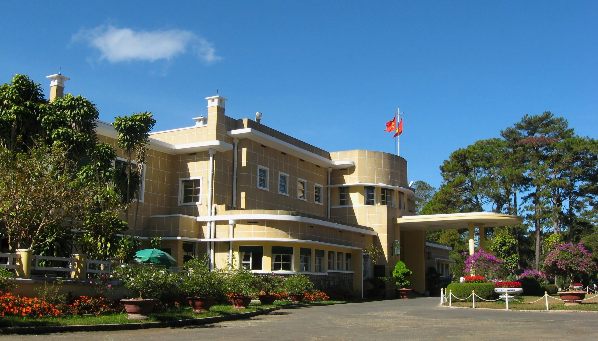
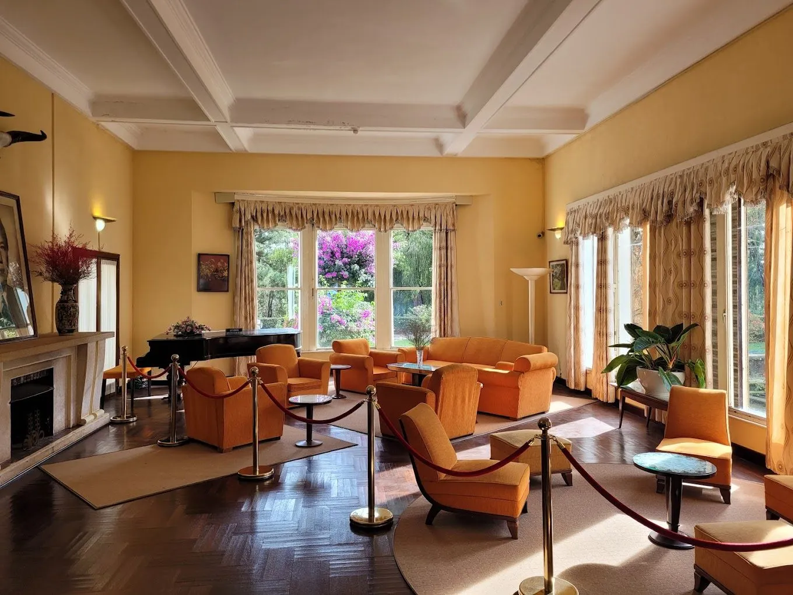
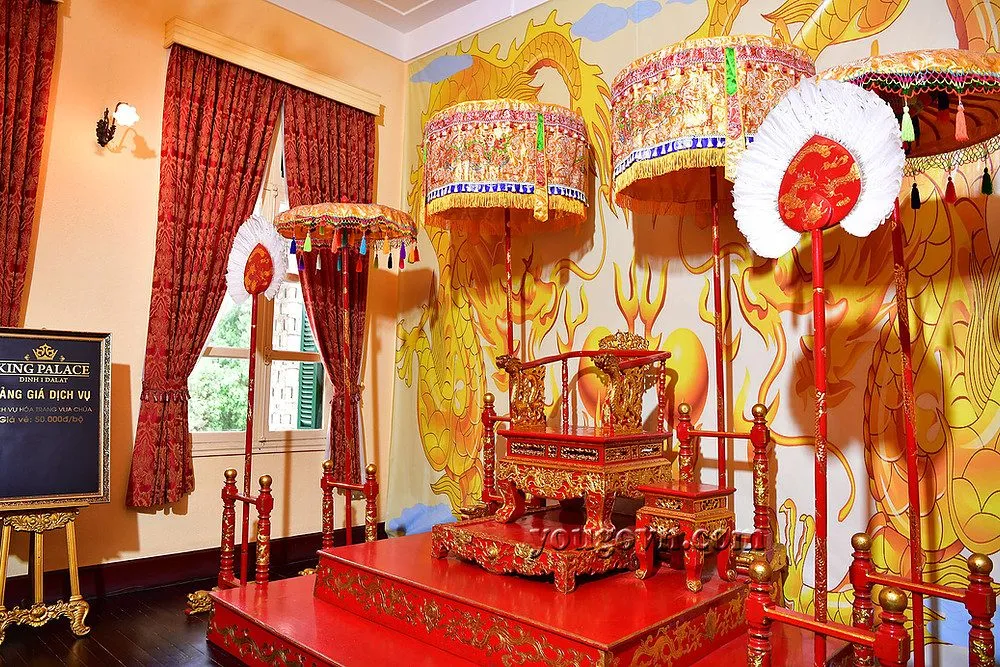

Bao Dai Palace in Dalat None Outstanding historical site that you should visit

Mục lục bài viết
Bao Dai Palace Đà Lạt là một trong những địa điểm du lịch nổi bật khi khám phá thành phố ngàn hoa. Gắn liền với vị vua cuối cùng triều Nguyễn, nơi đây không chỉ lưu giữ giá trị lịch sử, văn hóa mà còn sở hữu kiến trúc Pháp cổ điển đặc trưng. Với không gian rộng lớn, rừng thông bao quanh và khí hậu mát mẻ quanh năm, Bao Dai Palace mang đến sự yên bình, hoài cổ và là điểm checkNonein lý tưởng cho mọi du khách khi đến Đà Lạt.

1. What is special about Bao Dai Palace in Dalat?
Bao Dai Palace Đà Lạt là điểm dừng chân độc đáo khi khám phá thành phố sương mù. Với kiến trúc mang đậm dấu ấn châu Âu, nơi đây tái hiện không gian sống xa hoa của hoàng gia Việt Nam đầu thế kỷ 20. Mỗi dinh thự đều kể một câu chuyện riêng, phản ánh gu thẩm mỹ và lối sống của vua Bảo Đại – vị vua cuối cùng triều Nguyễn.
In addition to their historical value, these three mansions also attract tourists by their peaceful natural scenery, surrounding pine forests and fresh air None creating a relaxing space in the heart of bustling Da Lat city.
1.1. Vị trí & cách đi Bao Dai Palace ở Đà Lạt
Hệ thống Bao Dai Palace tại Đà Lạt gồm ba dinh chính: Dinh I, Dinh II và Dinh III, nằm ở các vị trí thuận lợi, dễ tìm kiếm và phù hợp cho hành trình tham quan:
-
Dinh I: Số 1, đường Trần Quang Diệu, phường 10
-
Dinh II: Giao lộ Trần Hưng Đạo, Ba Tháng Tư và Hồ Tùng Mậu, phường 10
-
Dinh III: Số 1, đường Triệu Việt Vương, phường 4
Visitors can easily travel by motorbike, car or taxi from the city center.

1.2. History of Bao Dai Palaces in Da Lat
Palace I None General headquarters of King Bao Dai
-
Built in the early 1940s, on an 18Nonehectare pine hill.
-
Originally the private residence of a French businessman, it was later used by King Bao Dai during his time as Head of State (1949–1955).
-
It has luxurious European architecture and a royal interior.
-
Currently in the stage of converting functions, temporarily closed to welcome guests.

Palace II None A mark of the French colonial period
-
Built in 1933, area more than 26 hectares.
-
Used to be the resort of Indochina Governor General Jean Decoux.
-
Carry
-
Classic French architectural style, surrounded by pine forests and flower gardens.
-
An attractive destination for those who love French history, art and architecture.

Palace III None Living space of the royal family
-
Built from 1933 to 1938, designed by two French architects.
-
It is the residence of King Bao Dai and Queen Nam Phuong.
-
Opened to welcome visitors since 1985, preserving many precious artifacts.
-
This is the best preserved and maintained mansion of the three.

2. Experience at Bao Dai Palace in Dalat
Mỗi dinh thự trong cụm Bao Dai Palace Đà Lạt đều mang những nét riêng biệt, từ kiến trúc đến không gian sống:
-
Dinh I: Ẩn mình giữa rừng thông, không gian cổ kính, nội thất sang trọng.
-
Dinh II: Tráng lệ với 25 phòng, chi tiết trang trí tinh xảo, vườn cây chăm sóc kỹ lưỡng.
-
Dinh III: Hiện đại hơn với mái bằng, hình khối vuông vức, bố trí hài hòa – thích hợp cho các hoạt động tham quan, chụp ảnh.

2.1. Learn about feudal culture at Bao Dai Palace
Không chỉ là nơi tham quan kiến trúc, Bao Dai Palace Đà Lạt còn là nơi lưu giữ dấu ấn của nền văn hóa phong kiến Việt Nam.
Visitors will discover:
-
Royal interior decoration
-
Precious historical artifacts
-
The living space reflects the lifestyle, thinking and social roles of the royal family of the Nguyen Dynasty
Stories revolving around the life of King Bao Dai will help you better understand the turbulent historical context during the EastNoneWest interference period.

2.2. CheckNonein virtually at Bao Dai Palace
The three villas are all located in a campus filled with trees, flowers and the chilly atmosphere typical of Da Lat.
This is the ideal background for photos:
-
Ancient French architecture, tiled roof, multiNonepane glass windows
-
MossNonecovered stone steps and romantic tree arches
-
Vast pine garden, fresh green flowers and leaves
👉 An extremely chill virtual living location, helping you preserve beautiful moments during your trip.
2.3. Các location gần Palace Bảo Đại should visit qua
Sau khi visit/explore Palace Bảo Đại, you can kết hợp discover các địa danh nổi tiếng gần đó:
-
Robin Hill: Toàn cảnh thành phố từ trên cao, cáp treo cực đẹp.
-
Flower Garden thành phố: Hàng trăm loài hoa đua sắc quanh năm.
-
Church Con Gà: Icon kiến trúc Công giáo của Đà Lạt.
-
Railway Station Đà Lạt: Nhà ga cổ nhất Đông Dương với phong cách Art Deco.
Việc kết hợp visit/explore giúp bạn có trải nghiệm complete/perfect hơn về văn hóa – lịch sử – kiến trúc Đà Lạt.

3. Kinh nghiệm du lịch Palace Bảo Đại Đà Lạt
3.1. Hướng dẫn di chuyển đến Palace Bảo Đại
You can dễ dàng đến Palace Bảo Đại Đà Lạt bằng motorbike, car cá nhân hoặc taxi từ trung tâm thành phố. Below are hướng dẫn di chuyển chi tiết đến từng palace:
-
Palace I: Di chuyển theo đường Trần Quang Diệu hoặc Hồ Tùng Mậu.
-
Palace II: Đi qua trục đường Khởi Nghĩa Bắc Sơn hoặc Trần Hưng Đạo.
-
Palace III: From the center, bạn đi theo đường Triệu Việt Vương hoặc Lê Hồng Phong, rất dễ tìm.
Các tuyến đường đều được trải nhựa, dễ đi, không quá xa trung tâm nên rất convenient cho hành trình visit/explore.

3.2. Thời điểm ideal để visit/explore Palace Bảo Đại
Khoảng thời gian tháng 11 đến tháng 4 năm sau là the best time to visit để discover Palace Bảo Đại Đà Lạt. Lý do:
-
Thời tiết khô ráo, trời trong, ánh sáng đẹp để take photos.
-
Không khí cool and refreshing, dễ chịu – đặc trưng của Đà Lạt dry season.
-
Ít mưa, ít misty/foggy – convenient di chuyển và discover các khu vực ngoài trời.
Nếu đi vào summer (tháng 5–10), you should chuẩn bị áo mưa nhẹ và lên kế hoạch tránh các khung hours mưa chiều thường gặp.
 Photo: Palace Bảo Đại
Photo: Palace Bảo Đại
3.3. Giá vé visit/explore Palace Bảo Đại Đà Lạt mới nhất
Hiện nay, Palace I và Palace III là hai location chính đang mở cửa đón khách. Mức giá vé visit/explore cập nhật như sau:
🎫 Palace I:
-
Người lớn: 90.000 VNĐ/people
-
Trẻ em (cao 1m – dưới 1m2): 50.000 VNĐ
-
Trẻ em dưới 1m: Free
🎫 Palace III:
-
Người lớn: 40.000 VNĐ/people
-
Trẻ em (cao 1m – dưới 1m2): 20.000 VNĐ
-
Trẻ em dưới 1m: Free
📌 Lưu ý: Giá vé có thể thay đổi theo chính sách từng thời điểm. Để chắc chắn, you should gọi điện trước hoặc kiểm tra trên Google Maps/bản tin du lịch Đà Lạt.
3.4. Một số note khi visit/explore Palace Bảo Đại
Để có một chuyến visit/explore complete/perfect và tôn trọng giá trị lịch sử – văn hóa tại Palace Bảo Đại Đà Lạt, you should:
-
Giữ trật tự: Hạn chế nói chuyện lớn tiếng trong atmosphere palace, especially ở khu trưng bày cổ vật.
-
Bảo vệ cảnh quan: Không xả rác bừa bãi, bỏ rác đúng nơi quy định.
-
Tuân thủ nội quy: Một số khu vực yêu cầu mang bọc giày, tránh làm trầy xước sàn gỗ.
-
Không mang thức ăn vào dinh: Giúp giữ vệ sinh, tránh thu hút côn trùng.
-
Trông coi trẻ nhỏ: Đảm bảo an toàn và tránh va chạm các hiện vật quý.
-
Thuê hướng dẫn viên nếu cần: Giúp hiểu rõ hơn về lịch sử, kiến trúc, nhân vật liên quan đến Palace Bảo Đại.
 Photo: Tham quan Palace Bảo Đại
Photo: Tham quan Palace Bảo Đại
4. What to Eat sau khi discover Palace Bảo Đại?
Sau khi kết thúc chuyến visit/explore đầy thú vị tại Palace Bảo Đại, nếu bạn đang tìm kiếm một location ideal để rest/relax, dining và enjoy ambiance chill nhẹ nhàng của Đà Lạt về đêm, do visit ngay Tiệm Nướng & Chill Xóm Lèo – tọa lạc gần trung tâm, cách Palace III chỉ khoảng 15 minutes di chuyển.

Vì sao nên chọn Tiệm Nướng & Chill Xóm Lèo?
-
Không gian chill ngập ánh đèn: Bàn gỗ, đèn vàng, view đồi cực romantic – ideal cho in the evening thư giãn.
-
Thực đơn diverse: Nướng tảng, xiên que, bạch tuộc, nầm bò Mỹ, seafood tươi sống… nướng tại bàn, ướp đậm đà.
-
Giá hợp lý: Phù hợp với nhóm bạn, cặp đôi, gia đình.
-
Phục vụ tận tình: Nhân viên friendly, hỗ trợ chọn món theo khẩu vị từng khách.

📍 Address: 113 Huỳnh Tấn Phát, Phường 11, Đà Lạt, Lâm Đồng 67000
📌 Book a Table: Tại Đây
📌 Google Maps: Get Directions
⏰ Opening Hours: 15:00 – 23:00 daily
📞 Hotline book a table: 076.45.27.336 – 08.99.42.84.34 – 0902.91.22.40
Palace Bảo Đại Đà Lạt là destination ideal để hiểu thêm về lịch sử, kiến trúc và văn hóa Việt Nam trong giai đoạn giao thời. Hãy kết hợp trải nghiệm này cùng một bữa tối delicious tại Tiệm Nướng & Chill Xóm Lèo để hoàn thiện hành trình du lịch complete/perfect tại the misty city.